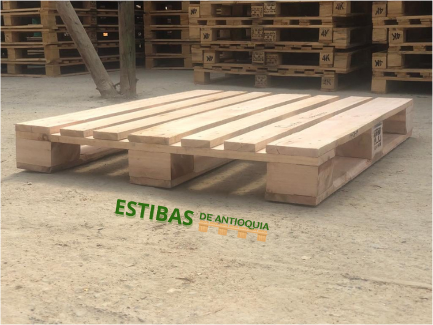
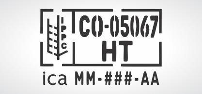

CONÓCENOS
NOSOTROS
Somos un equipo dispuesto a ayudarte
Somos una empresa especializada en la fabricación y comercialización de estibas, huacales y productos de madera para el almacenaje, transporte y logística de productos nacionales y de exportación, con más de 15 años de experiencia en el mercado. Contamos con la autorización y certificación ICA NIMF15 para fabricar todo tipo de embalajes de madera para la exportación. Poseemos el conocimiento y las herramientas para garantizar toda la línea de producción desde la cosecha de madera hasta la entrega de productos.
Ver Productos

Sanitización
CERTIFICADO ICA
Contamos con el registro ICA para prestarles el servicio de Sanitización de estibas y huacales para cumplir con el requisito de exportación.